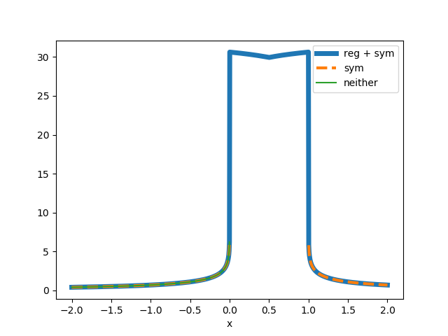
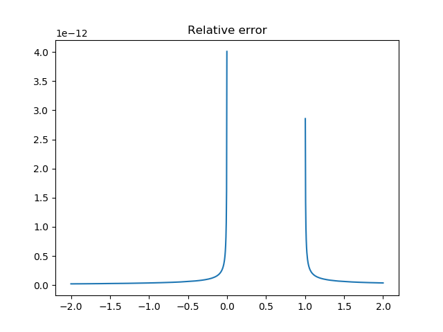

Note
Click here to download the full example code
Line charge¶
Test and validation of gamma_0
- For the math see:
A. S. Ferguson, Xu Zhang and G. Stroink, “A complete linear discretization for calculating the magnetic field using the boundary element method,” in IEEE Transactions on Biomedical Engineering, vol. 41, no. 5, pp. 455-460, May 1994. doi: 10.1109/10.293220
import numpy as np
import matplotlib.pyplot as plt
import sys
from mayavi import mlab
path = '/m/home/home8/80/makinea1/unix/pythonstuff/bfieldtools'
if path not in sys.path:
sys.path.insert(0,path)
from bfieldtools.integrals import gamma0
from bfieldtools.utils import tri_normals_and_areas
%% Test potential shape slightly above the surface
points = np.array([[0,0,0],
[1,0,0],
[0,1,0]])
tris = np.array([[0,1,2]])
p_tris = points[tris]
# Evaluation points
Nx = 100
xx = np.linspace(-2, 2, Nx)
X,Y = np.meshgrid(xx, xx, indexing='ij')
Z = np.zeros_like(X) + 0.1
p_eval = np.array([X,Y,Z]).reshape(3,-1).T
# Difference vectors
RR = p_eval[:,None, None,:] - p_tris[None,:,:,:]
pot = gamma0(RR)
# Plot shape
plt.figure()
plt.imshow(pot[:,0].sum(axis=-1).reshape(Nx, Nx), extent=(xx.min(),xx.max(),
xx.max(),xx.min()))
plt.ylabel('x')
plt.xlabel('y')
""" Test potential at directly at the edge. As the line has no
perpendicular dimensions, the potential is infinite at the edge.
The regularization factor given to the function apprximates the line
current with a small radius, giving rougly constant potential on the line.
The relative error between the regularized verison and
the infinitely thin line charge seems to be on the order of the "reg" value
The "symmetrize" option symmeterizes the result with respect to the
mid point. This removes errors (Nans) on the other continuoation of the edge
"""
#%%
points = np.array([[0,0,0],
[1,0,0],
[0,1,0]])
tris = np.array([[0,1,2]])
p_tris = points[tris]
# Evaluation points
Nx = 1000
x = np.linspace(-2, 2, Nx)
y = z = np.zeros_like(x)
p_eval = np.array([x,y,z]).T
# Difference vectors
RR = p_eval[:, None, None,:] - p_tris[None,:,:,:]
# Regularize and symmetrize
pot = gamma0(RR, 1e-13, True)
pot0 = pot[:,0,2]
plt.figure()
plt.plot(x, pot0, linewidth=5)
# Symmetrize, but do not regularize
pot = gamma0(RR, 0, True)
pot1 = pot[:,0,2]
plt.plot(x, pot1, '--', linewidth=3)
# Neither
pot = gamma0(RR, 0, False)
pot2 = pot[:,0,2]
plt.plot(x, pot2)
plt.xlabel('x')
plt.legend(('reg + sym', 'sym', 'neither'))
plt.figure()
plt.title('Relative error')
plt.plot(x, abs(pot0-pot1)/pot1)
- 
- 
Out:
/l/bfieldtools/bfieldtools/integrals.py:54: RuntimeWarning: invalid value encountered in true_divide
res = np.log((nn1 + dotprods2 + reg) / (nn2 + dotprods1 + reg))
/l/bfieldtools/bfieldtools/integrals.py:54: RuntimeWarning: divide by zero encountered in log
res = np.log((nn1 + dotprods2 + reg) / (nn2 + dotprods1 + reg))
/l/bfieldtools/bfieldtools/integrals.py:60: RuntimeWarning: divide by zero encountered in true_divide
res2 = -np.log((nn1 - dotprods2 + reg) / (nn2 - dotprods1 + reg))
/l/bfieldtools/bfieldtools/integrals.py:60: RuntimeWarning: invalid value encountered in true_divide
res2 = -np.log((nn1 - dotprods2 + reg) / (nn2 - dotprods1 + reg))
/l/bfieldtools/examples/validation/validate_line_charge_potential.py:102: RuntimeWarning: invalid value encountered in true_divide
plt.plot(x, abs(pot0-pot1)/pot1)
Total running time of the script: ( 0 minutes 1.016 seconds)
Estimated memory usage: 9 MB